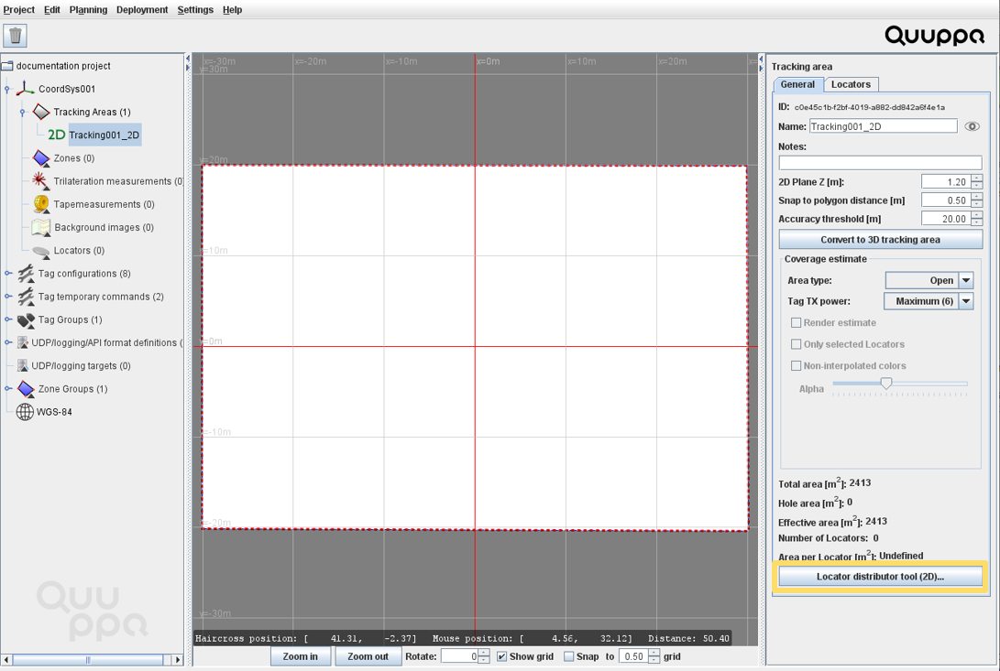
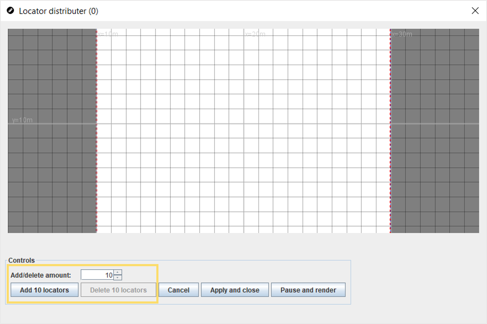
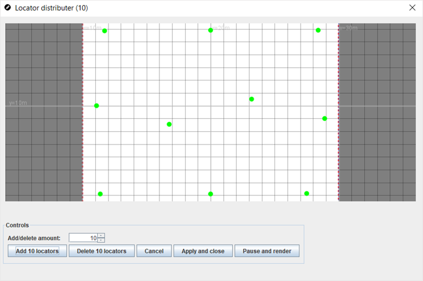
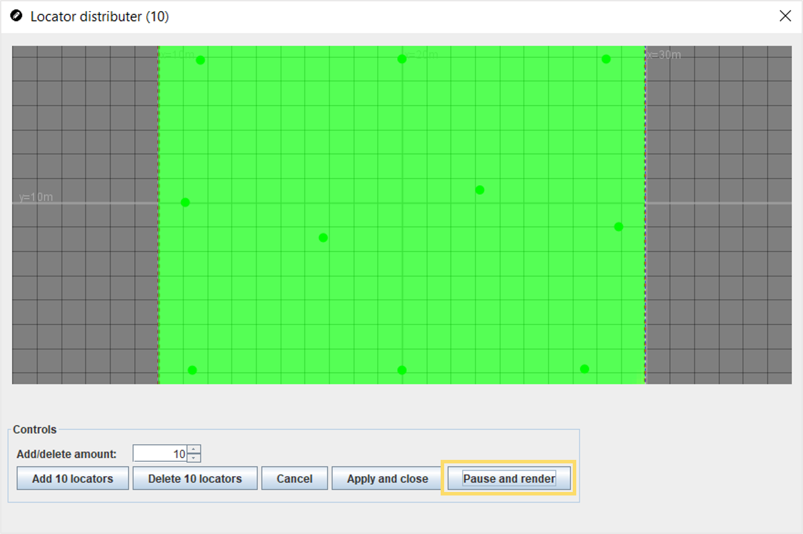
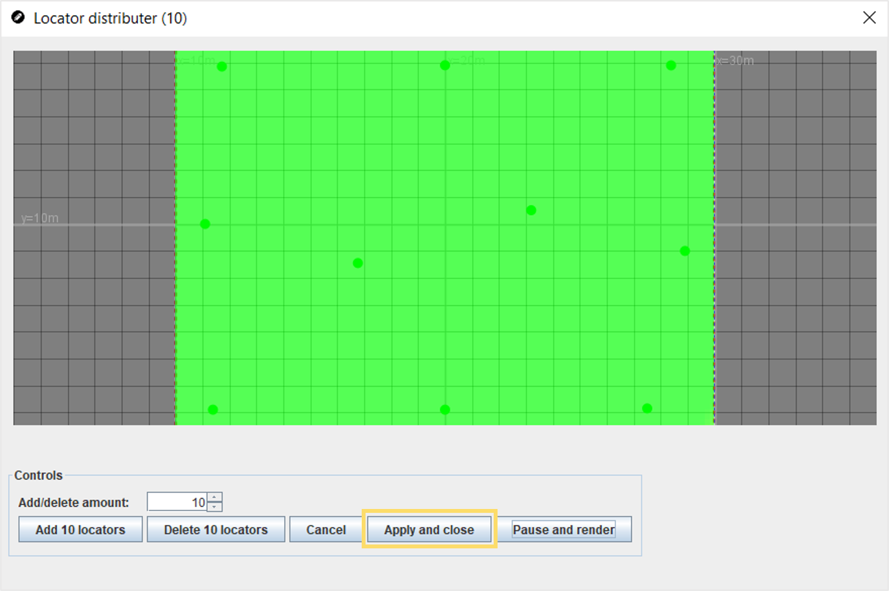

Add Locators Using the Locator Distributor Tool
Adding Locators to the project plan is one of the key steps in planning a Quuppa system. The fastest way to add Locators to your project is to use the Locator Distributor Tool. The tool adds multiple Locators to the project at once and automatically spreads them evenly around the tracking area. This tool will save you time when planning larger deployments as you do not need to apply the Locators one by one.
The Locator Distributor Tool is available for 2D deployments.
The instructions below will walk you through how to do this.
- Open the project in the QSP.
- Select the tracking area either by clicking it in the map view or in the object tree panel on the left.
-
Start the Locator Distributor Tool by clicking the Locator
distributor tool (2D)... button in the object info panel on the
right.

-
In the Locator Distributor window that opens, use the Add X
locators button to add Locators to the area. You can adjust the
amount of Locators that are added at once by adjusting the number in the
Add/delete amount field.

The Locator Distributor Tool will place the desired number of Locators evenly around the tracking area.

-
Click the Pause and render button to check the coverage
estimate for the Locator distribution.

For accurate tracking, the tracking area should be mainly greenish in colour. Keep adjusting the amount of Locators until you achieve a good coverage result.
-
Once you are happy with the results, click the Apply and
close button to apply the Locator distribution to the project.
Locators will be added to the project accordingly.

Note: This feature uses the default Locator type set for this project for creating the new Locators. If you need to change the Locator type for the new Locators, you can change it manually for a specific Locator or groups of Locators.- For a single Locator, select the Locator and in the Config tab in the panel on the right, select the correct Locator type from the drop down menu.
- For multiple Locators, select the relevant Locators and select the correct Locator type from the drop down menu in the panel on the right before clicking the Set type button.